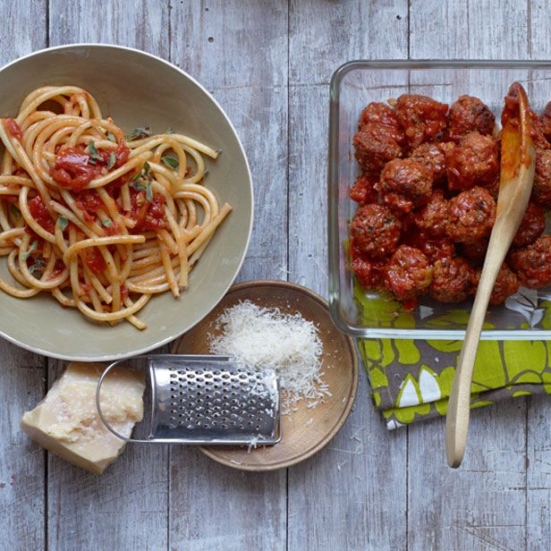

Italy
Italy is the graciously beautiful country known for its rich heritage, culture, art, and let’s not forget its most relished and cherished food varieties.
Italian cuisine has reached across all continents. There have been many changes, variations, and adaptations that have all blended in. The culture of any country plays an important role in this. Every country has added their own creativity and colour to the beloved Italian Cuisine. Italian food receives a huge fan base more than any other cuisines. From pasta to pizza, wine, gelato, Italian food is simply the best. So, let’s look at 10 interesting facts about Italian food to inspire you which are as follows:
Spaghetti and Meatballs is not an Italian dish
It is known to be one of the most renowned dishes in the world, but unfortunately, it is not an Italian dish. The fact is most pasta dishes are not topped with meat. Only special dishes like “al Forno” which is topped with meat.
Traditional Italian Pizza always has a thin crust
There are a lot of variations of pizza but in Italy, they always have a thin crust pizza. Learn how to make a traditional Italian Pizza!
Italians have a light Breakfast
Breakfast is believed to be the most important meal of the day in most countries but in Italy, they believe different. They only drink milky coffee first thing in the morning like cappuccino or caffe latte. The reason for this is they prefer to save their appetite for their main meal lunch.
Pepperoni Pizza is not originated in Italy
A fun fact, pepperoni with one P means bell pepper in Italian. Pepperoni originates in the USA.
There are more than 600 different pasta shapes
Worldwide, there are over 6 hundred varieties of pasta produced. There is a pasta shape to complement every pasta dish out there. There are different sizes of stuffed ravioli, penne or tubes, spaghetti, curly spirali, and many more to name.
Pasta is eaten once a day, every day
Many Italian people eat pasta at least once a day. Some are very picky, most will not skip their pasta meal as there are many ways pasta can be eaten in a meal; therefore, you will want to eat a different meal for every day of the year.